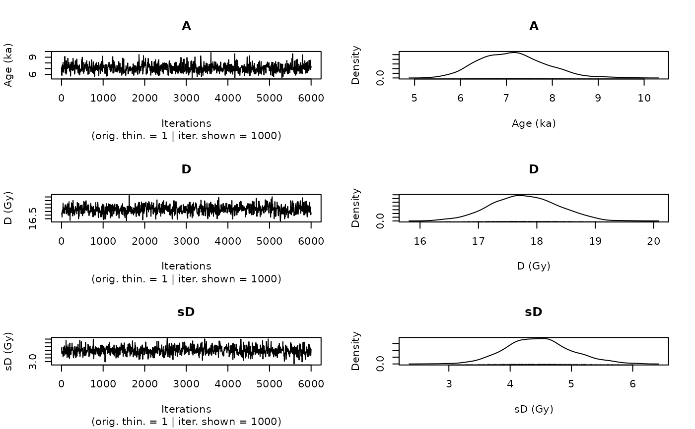

This function uses the output of rjags::jags.model to visualise the traces of the MCMC and the
corresponding densities. In particular it displays the posterior distributions of the age, if it is calculated,
palaeodose and the equivalent dose dispersion parameters of the sample. The function output is very
similar to plot output produced with the 'coda' package, but tailored to meet the needs in
the context of the 'BayLum' package.
Arguments
- object
coda::mcmc.list or coda::mcmc (required): Output generated by rjags::jags.model, e.g., in Age_Computation. Alternatively, limited support is provided for
BayLum.listobject input- sample_names
character (optional): Names of the used samples. This argument overrides the optional argument
mtext.- variables
character (with default): Variables in your coda::mcmc object to be plotted.
- axes_labels
character (with default): Axes labels used for the trace and density plots. The labels should be provided as named character vector with the parameter names as the names used to assign the axes labelling. The labelling for the x-axis (trace plots) and y-axis (density plot) cannot be modified.
- n.chains
numeric (optional): Set the number of chains to visualise, if nothing is provided the number of chains is determined from the input object
- n.iter
integer (with default): Set the number of iterations to be visualised in the trace plots, regardless of the size of the input dataset as long as the real number of iterations is >
n.iter. Please note that large numbers impact the plot performance.- smooth
logical (with default): Enable/disables smooth of trace plots using stats::smooth
- rug
logical (with default): Enable/disables rug under density plots
- plot_single
logical (with default): Enables/disables the single plot mode of the function, i.e. if set to
TRUEevery plot is returned in a single plot and own par settings can be applied.- ...
further arguments that can be passed to modify the plot output. Supported arguments are
lwd,lty,col,type,cex,mtext, cf. mtext formtextand plot.default for the other arguments.
Value
Two plots: Traces of the MCMC chains and the corresponding density plots. This plots are similar to coda::traceplot and coda::densplot.
Details
The function is used in the function Age_Computation, AgeS_Computation and Palaeodose_Computation, but can be used also as standalone plot function.
Author
Sebastian Kreutzer, Institute of Geography, Ruprecht-Karl University of Heidelberg (Germany). This function is a re-written version of the function 'MCMC_plot()' by Claire Christophe
Examples
data(MCMCsample,envir = environment())
object <- coda::as.mcmc(MCMCsample)
plot_MCMC(object)
